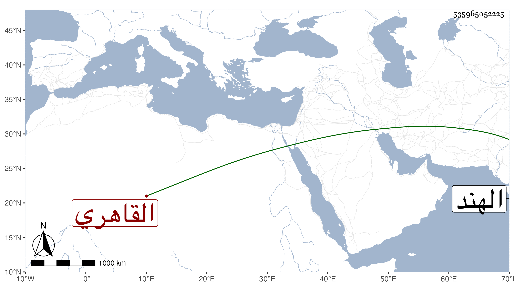

0902Sakhawi.DawLamic.ITO20230111-ara1.EIS1600.535965052225
Biography ID: 535965052225
805
هاجر ابنة الجمال عبد الواحد الويشى ، نسبة لويش الحجر ، القاهري جدتي أم الوالدة . كانت خيرة مباركة سليمة الفطرة راغبة في الخير مقبلة على الارامل قانعة باليسير حجت عشر حجج وجاورت في كثير منها مع زوجها الجد ولم تتزوج غيره ثم مع ولدها أبي الحسن ثم معي ثم بمفردها وأثكلت عدة أولاد وسافر ولدها المشار اليه إلى الهند فانقطع خبره ولم تزل اسيفة على فقده حتى ماتت في سنة سبع وستين وأظنها جازت السبعين رحمها الله وعوضها الجنة .
